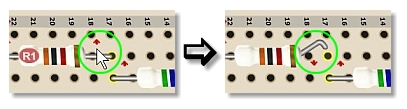
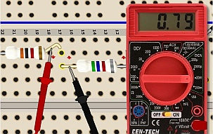
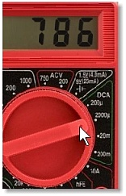
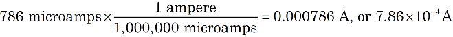

Measuring current in a circuit is like measuring the flow-rate of water in a sprinkler system. To find out how fast the water is flowing you must insert a flow meter in the line. It's the same with electricity in a circuit.
|

Figure 1. Click the red arrow to lift a lead. |
A battery forces electric charge (just like water in a pipe) to move around a circuit. To measure how much charge is moving, you insert a flow meter in the line. A meter that measures electric current is called an ammeter. It measures in units of amperes, or Coulombs (a unit of electric charge) per second. One ampere (or "amp", abbreviated "A") is quite a lot of current, so in small circuits you will usually measure in milliamps (1 mA = 1/1000 A) or even microamps (1 mA = 1/1,000,000 A).
|
 Figure 2. DMM probes connected: inserts DMM into the circuit as an ammeter, reading 0.79mA. |
In this activity, to place the probes of the digital multimeter (DMM) ammeter in the line, you need to first lift one of the leads in the circuit, as shown in Figure 1. Then you can touch the pair of DMM probes to the lifted lead and the adjacent lead. See Figure 2. The electric charge can then flow through the DMM to complete the circuit. When the DMM knob is turned to a current mode (DCA), the display indicates the rate, that is, the current.
|
 Figure 3. Knob changed to 2000μA |
When the knob is set to "20m," the DMM can read values up to 20 milliamps. So, Figure 2 shows a reading of 0.79 mA. At a more sensitive knob setting, the DMM can show three—or sometimes even four—digits. In Figure 3 the DMM knob is moved to the 2000μA range, and the same current reading is shown more precisely to be 786μA.
Note: Be careful working with units. Most formulas, like Ohm's law, expect measures in volts (V) and amperes (A). But you will often encounter voltages in millivolts (that is, 1/1,000 volt) and currents in milliamps (mA) or microamps (μA). So, you can convert a measure of 786 microamps to amperes:

As you can see, this conversion is actually as simple as moving the decimal point six places left. With a little practice it will become easy for you!